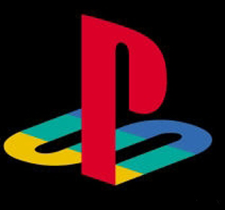
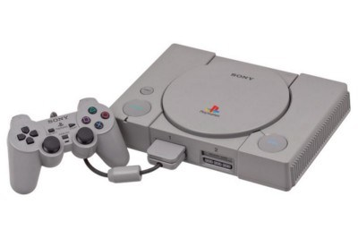
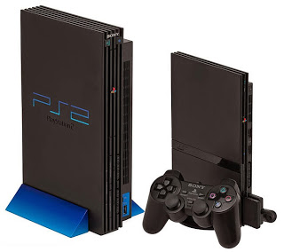
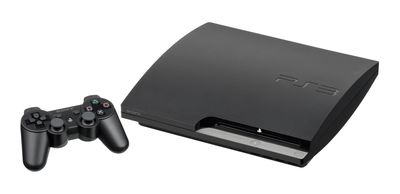
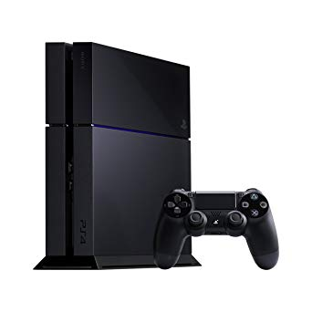

Playstation
A Sony Company
About
Playstation is a Japanese gaming brand that consists of four home video game consoles, as well as a media center, an online service, a line of controllers, two handhelds and a phone, as well as multiple magazines. It is created and owned by Sony Interactive Entertainment since December 3, 1994, with the launch of the original PlayStation in Japan.
The original console in the series was the first video game console to ship 100 million units, 9 years and 6 months after its initial launch. Its successor, the PlayStation 2, was released in 2000. The PlayStation 2 is the best-selling home console to date, having reached over 155 million units sold as of December 28, 2012. Sony's next console, the PlayStation 3, was released in 2S006 and has sold over 80 million consoles worldwide as of November 2013. Sony's latest console, the PlayStation 4, was released in 2013, selling 1 million consoles in its first 24 hours on sale, becoming the fastest selling console in history.
Products
On 7 July 2000, Sony released the PS one, a smaller, redesigned version of the original PlayStation. It was the highest-selling console through the end of the year, outselling all other consoles - including Sony's own PlayStation 2. A total of 28.15 million PS one units had been sold by the time it was discontinued in March 2006. A version of the PS one included a 5-inch (130 mm) LCD screen, referred to as the "Combo pack". The PlayStation Controller is the first gamepad released by Sony Computer Entertainment for its PlayStation video game console. The original version (model SCPH-1010) was released alongside the PlayStation on December 3, 1994.
The PlayStation 2 (PS2) is a home video game console that was developed by Sony Computer Entertainment. It is the successor to the PlayStation and is the second installment in the PlayStation lineup of consoles. It was released in 2000 and competed with Sega's Dreamcast, Nintendo's GameCube and Microsoft's Xbox in the sixth generation of video game consoles.
The PlayStation 3 (PS3) is a home video game console developed by Sony Computer Entertainment. It is the successor to PlayStation 2, and is part of the PlayStation brand of consoles. It was first released on November 11, 2006, in Japan, November 17, 2006, in North America, and March 23, 2007, in Europe and Australia. The PlayStation 3 competed mainly against consoles such as Microsoft's Xbox 360 and Nintendo's Wii as part of the seventh generation of video game consoles.
The PlayStation 4 (PS4) is an eighth-generation home video game console developed by Sony Interactive Entertainment. Announced as the successor to the PlayStation 3 during a press conference on February 20, 2013, it was launched on November 15 in North America, November 29 in Europe, South America and Australia; and February 22, 2014, in Japan. It competes with Nintendo's Wii U and Switch, and Microsoft's Xbox One.